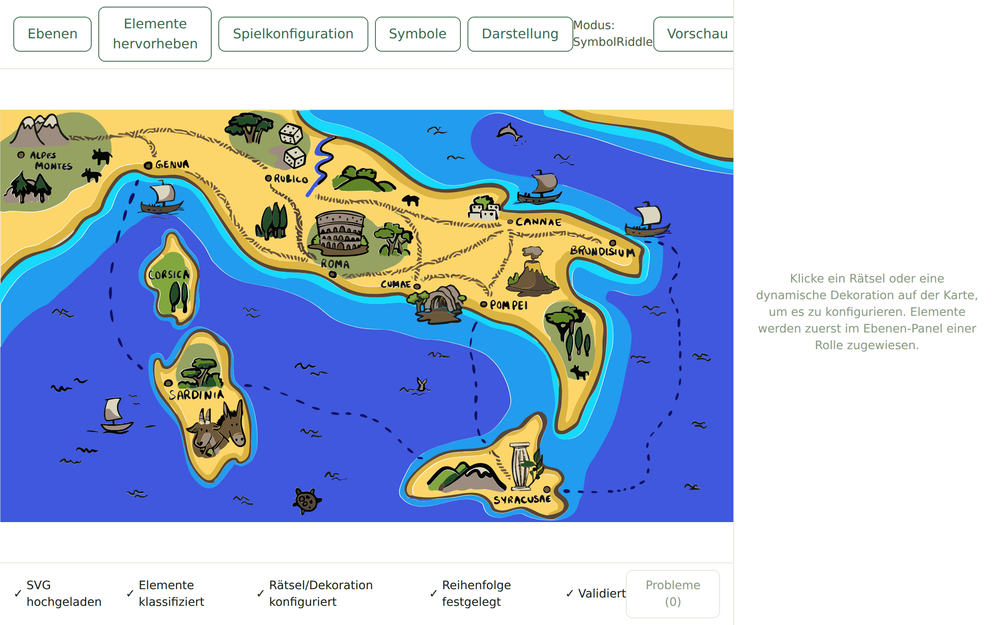
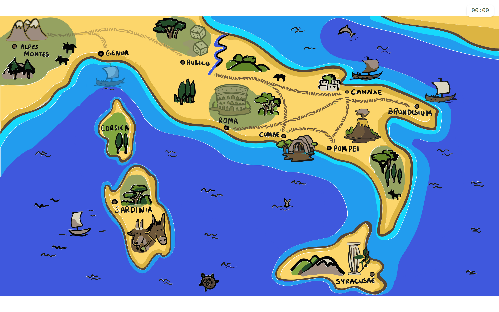
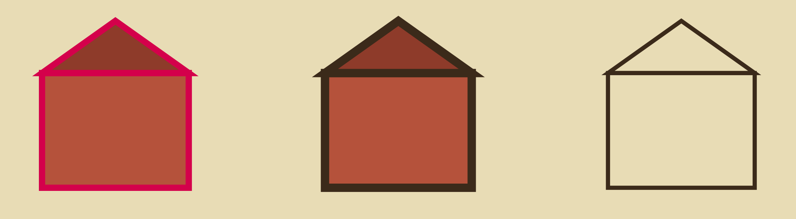
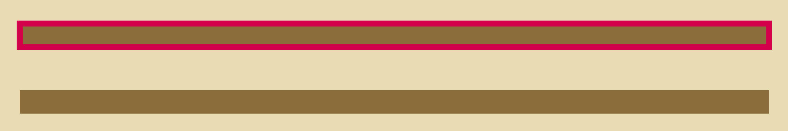
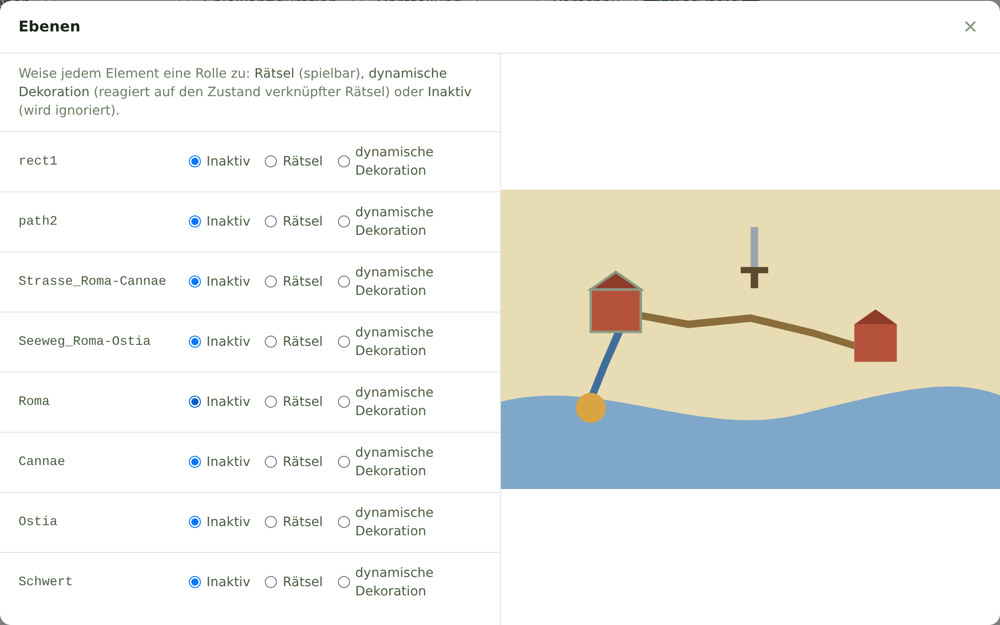

Für jedes Zeichenprogramm, das SVG speichern kann
Aus Ihrer Karte wird ein Rätselspiel, das Schülerinnen und Schüler im Browser spielen. Damit Ihre Datei ohne Nacharbeit funktioniert, beschreiben diese Vorgaben, was in der SVG-Datei stehen muss.
Welches Programm Sie verwenden, ist egal. Die Vorgaben beschreiben nur das Ergebnis in der Datei, nicht die Bedienung eines bestimmten Programms. Ob Ihre Namen ankommen und am richtigen Element sitzen, prüfen Sie am Ende selbst im Editor (Abschnitt 7).
Das Wichtigste in Kürze
id.Die Autorin oder der Autor des Rätsels lädt Ihre Datei in einen Editor im Browser. Dort bekommt jedes benannte Element eine Rolle:
| Rätsel | Wird im Spiel angeklickt und stellt eine Frage, z. B. eine Stadt, ein Schwert oder eine Münze. |
|---|---|
| Dynamische Dekoration | Reagiert auf den Stand verknüpfter Rätsel, z. B. eine Straße, die erst erscheint, wenn eine Stadt gelöst ist. |
| Inaktiv | Gehört zum Hintergrund und bleibt immer gleich. |


Jedes Rätsel ist im Spiel in einem von drei Zuständen: gesperrt, zugänglich oder gelöst. Für jeden Zustand wählt die Autorin oder der Autor eine dieser Darstellungen:
| Darstellung | Wirkung |
|---|---|
| Versteckt | Das Element ist nicht zu sehen. |
| Verschleiert | Das Element ist blass. |
| Hervorgehoben | Das Element bekommt eine farbige Umrandung. |
| Normal | Das Element sieht aus, wie Sie es gezeichnet haben. |
Welche Darstellungen ein Projekt nutzt, ist verschieden. Manche Projekte verzichten z. B. ganz auf die Hervorhebung.
Dekorationen folgen den Rätseln, mit denen sie verknüpft sind. Eine Straße zwischen zwei Städten kann z. B. versteckt sein, bis eine der Städte gelöst ist.
Folge für Ihre Zeichnung: Die Karte muss auch dann vollständig wirken, wenn Rätsel oder Dekorationen blass oder ganz versteckt sind. Unter einer Straße, die später erscheint, braucht der Hintergrund keine Lücke und kein Loch, er wird einfach von der Straße überdeckt.
Richtig
Stadt und Straße liegen nebeneinander. Jedes Element reagiert für sich.
Falsch
Ein Klick auf die Straße oder das Schwert öffnet das Rätsel „Roma“. Das Rätsel „Schwert“ lässt sich nie öffnen.
Tipp: Gruppieren Sie alles, was zu einem Rätsel gehört, und geben Sie der Gruppe den Namen. So wird beim Klick und beim Hervorheben das ganze Rätsel erfasst.
display, visibility, opacity).
Das Spiel versteckt Elemente und macht sie blass.
Eine eigene Angabe kann das übersteuern, auch eine scheinbar harmlose wie „sichtbar“ oder „100 % Deckkraft“.
Lassen Sie diese Einstellungen bei Rätseln und Dekorationen auf dem Standard.Ob hervorgehoben wird, sagen wir Ihnen. Die Hervorhebung ist eine farbige Umrandung, die das Spiel um das Element zeichnet. Elemente, die hervorgehoben werden sollen, haben keine eigene Kontur, auch nicht in einzelnen Teilen einer Gruppe, denn eine eigene Kontur kann die Umrandung verdecken. Ist es noch offen, zeichnen Sie Rätsel ohne eigene Kontur, dann bleibt die Hervorhebung möglich.

Eine Linie, z. B. eine Straße, besteht nur aus Kontur, und die Umrandung des Spiels kommt dort nicht zuverlässig an. Zeichnen Sie Linien, die hervorgehoben werden sollen, als gefüllte Fläche. Die meisten Programme haben dafür einen Befehl, der eine Kontur in eine Fläche umwandelt. Linien, die nur versteckt oder blass werden, dürfen Linien bleiben.

| Vorgabe | Warum |
|---|---|
| Eine einzige SVG-Datei | Der Editor lädt genau eine SVG-Datei als Karte. |
Eine viewBox am Wurzelelement, die die ganze Karte umfasst |
Damit passt sich die Karte an jede Bildschirmgröße an. Fehlt sie oder umfasst sie nicht die ganze Karte, wird die Karte abgeschnitten oder falsch skaliert. Die meisten Programme setzen sie beim SVG-Export automatisch. |
| Text in Pfade umgewandelt | Schriften fehlen auf den Geräten der Spielenden. Text als Text wird dort in einer Ersatzschrift gezeigt. |
| Beschriftungen liegen außerhalb von Rätseln und Dekorationen | Eine Hervorhebung würde auch die Buchstaben umranden und sie unleserlich machen. Beschriftungen gehören zum Hintergrund. |
| Reine Vektorgrafik ohne Bilder | Verlinkte Bilder sind nicht Teil der Datei und fehlen im Spiel. Eingebettete Bilder machen die Datei groß. |
| Keine eingebetteten Schriften, keine Skripte oder anderen aktiven Inhalte | Schriften sind nach der Umwandlung in Pfade überflüssig. Die Karte ist reine Grafik, aktive Inhalte werden nicht unterstützt. |
| Empfohlen: etwa 1 MB oder kleiner | Die Karte wird auf Tablets und über Schul-WLAN geladen. Eine detailreiche Karte mit 9 Rätseln hatte 250 KB. |
Der Editor erkennt Elemente nur an ihrer id, einem Namen, der in der SVG-Datei am Element steht.
Erst im Editor bekommen sie dann ihre Rolle als Rätsel oder Dekoration:
<g id="Roma"> … </g>
Der Name muss als id in der Datei stehen.
Je nach Programm steht der Ebenen- oder Objektname als id in der Datei oder nur als Beschriftung, die der Editor nicht sieht.
Dann steht im Editor statt „Roma“ z. B. „rect479“.
Ob Ihre Namen ankommen, zeigt der Selbsttest in Abschnitt 7.
| Element | Schema | Beispiele |
|---|---|---|
| Rätsel | Name dessen, was es zeigt | Roma, Schwert, Muenze |
| Dekoration zwischen zwei Rätseln | Typ_RaetselA-RaetselB | Strasse_Roma-Cannae, Seeweg_Sardinia-Genua |
| Dekoration an einem Rätsel | Typ_Raetsel | Hafen_Ostia, Glanz_Schwert |
Die Beispiele sind nur Beispiele. Sprache und Schreibweise der Namen bekommen Sie von uns, passend zum Thema des Rätsels.
- und _.
Keine Leerzeichen.
Umlaute und ß umschreiben: ae, oe, ue, ss.Roma und roma sind zwei verschiedene Namen.Syracusa und Syracusae gemischt.rect16 oder path42.
Der Editor zeigt sie zwar an, sie bleiben aber inaktiv.Der Editor lädt Ihre Datei nicht hoch, er öffnet sie nur in Ihrem Browser.

rect1. Die Maus steht über Roma, auf der Karte ist Roma umrandet.| Problem | Ursache und Lösung |
|---|---|
Statt Ihres Namens steht ein automatischer Name wie rect479 in der Liste. |
Ihr Programm hat den Namen nicht als id gespeichert.
Suchen Sie in der Hilfe Ihres Programms nach „SVG id“ oder „Objekt-ID“. |
| Beim Überfahren wird nur ein Teil umrandet. | Der Name sitzt an einem Teil statt an der Gruppe (Abschnitt 3). |
| Beim Überfahren erscheint keine Umrandung. | Das Element hat eine eigene Kontur. Wichtig nur, wenn es hervorgehoben werden soll (Abschnitt 4). |
| Die Karte ist abgeschnitten oder zu klein. | Die viewBox fehlt oder umfasst nicht die ganze Karte (Abschnitt 5). |
Ohne Zugang zum Editor schicken Sie die Datei an <KONTAKT>, wir machen den Test dann für Sie.
viewBox, die die ganze Karte umfasst.- und _, jeder Name nur einmal.Versand: Schicken Sie die SVG-Datei an <KONTAKT>. Legen Sie eine Liste der Namen bei, mit einer Zeile pro Rätsel und Dekoration.